Automatic Transmission Disassembly 1 of 2

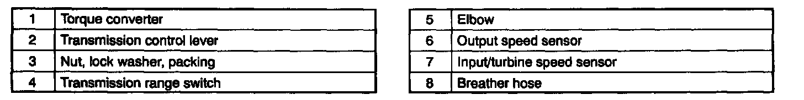


Disassembly Components
Disassembly Procedure
1. Remove the torque converter, and immediately turn it so that the hole faces upward. This will help to keep any remaining fluid from spilling.
2. Remove the throttle cable cramp.
3. Remove the transmission control lever.
4. Remove the staking of the lock washer, using the screwdriver.
5. Remove the nut, lock washer, and packing.
6. Remove the bolt.
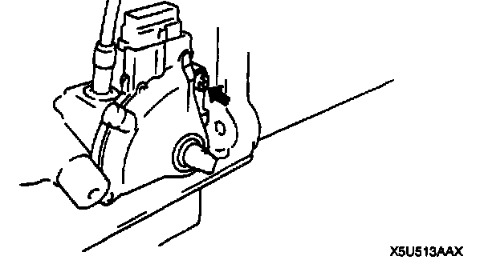
7. Remove the transmission range switch.
8. Remove the lock bolt.
9. Remove the elbow.
10. Remove the O-ring from the elbow.
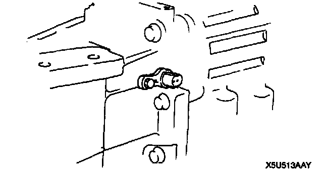
11. Remove the bolt and output speed sensor.
12. Remove the O-ring from the output speed sensor.
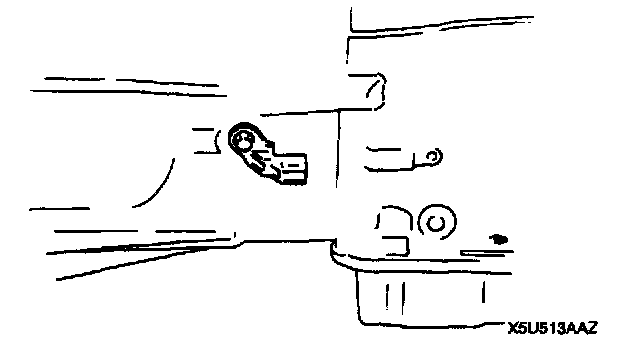
13. Remove the bolt and input/turbine speed sensor.
14. Remove the 0-ring from the input/turbine speed sensor.
15. Remove the breather hose.
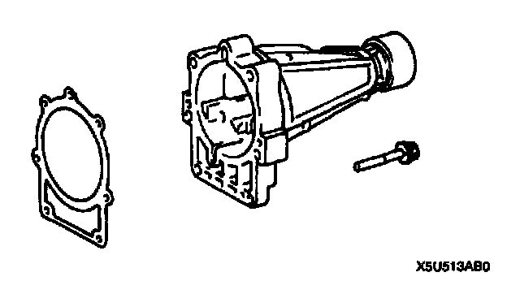
16. Remove the extension housing and gasket.
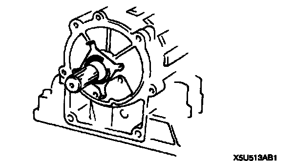
17. Remove the C-ring and then remove the speed sensor rotor.
18. Remove the bolts.
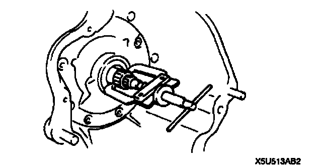
19. Remove the oil pump by using the puller.
20. Remove the bearing at the rear of oil pump.
21. Remove the bolts.
22. Holding input shaft by hand, remove the converter housing.
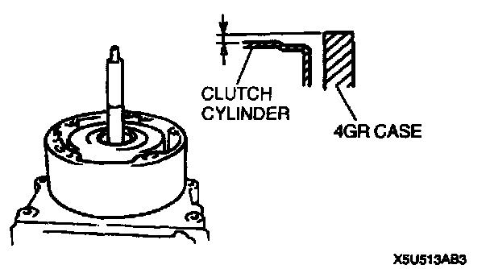
23. Inspect the dimensions of 4GR case surface and clutch cylinder surface for reassembly.
24. Remove the 4GR clutch component by holding input shaft.
25. Remove the 4GR case, bearing and bearing race.
26. Remove the oil pan. Examine any material found in the pan or on the magnet to determine the condition of the transmission. If large amounts of material are found, replace the torque converter and carefully inspect the transmission for the cause.
1) Clutch facing material
^ Drive plate wear.
2) Steel (magnetic)
^ Bearing, gear, and driven plate wear.
3) Aluminum (nonmagnetic)
^ Aluminum part wear.
Caution: To prevent deforming of the tube, remove the tube by pulling both ends up.
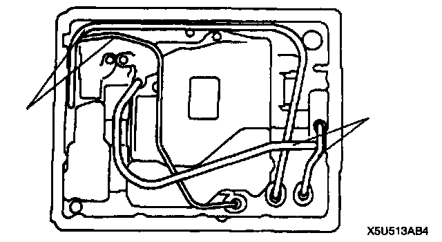
27. Remove the tube.
28. Disconnect the shift solenoid A, B, and torque converter clutch solenoid valve connector.
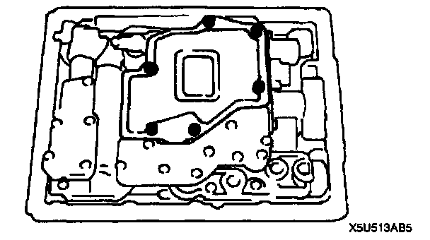
29. Remove the oil strainer.
30. Remove the control valve body installation bolts.
31. Lift control valve body and disconnect throttle cable from the throttle valve cam.
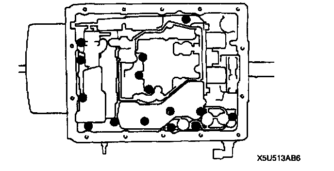
32. Remove the control valve body.

33. Remove the throttle cable from the transmission case by using the 10 mm (0.4 inch) socket wrench.
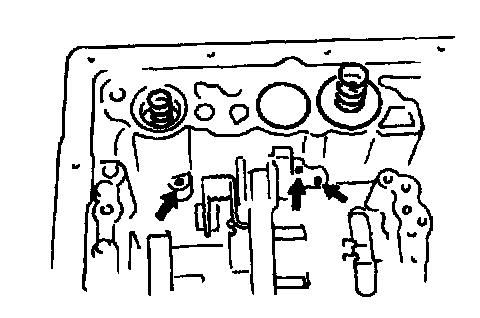
34. Remove the accumulator piston from the transmission case by applying compressed air through the fluid passage.
Air pressure 390 kPa (4.0 kgf/cm2, 57 psi) max.
Note:
^ To prevent transmission case from getting damaged, protect its contacting surface with stand by using rags or the like.
^ A stand of such size as shown in figure will facilitate work.
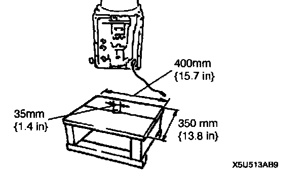
35. Place transmission upright as shown in the figure.
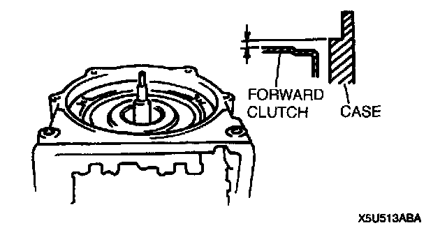
36. Inspect top surface level of forward clutch against case for reassembly.
37. Remove the forward clutch.
38. Remove the direct clutch.
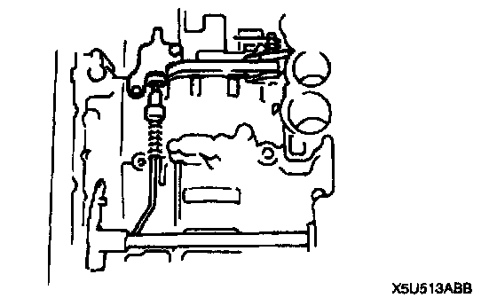
39. Remove the parking rod and parking pawl.
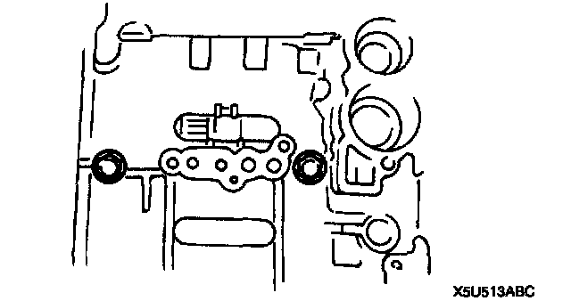
40. Remove the bolts from valve body side to remove the center support.
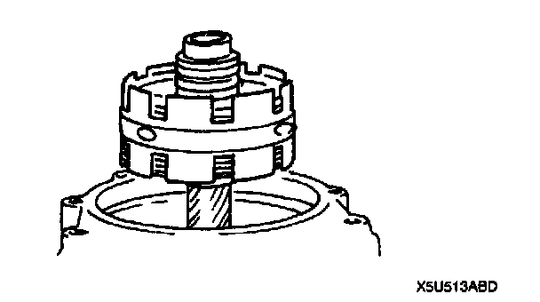
41. Remove the center support component.
42. Remove the retaining ring, planetary gear component and leaf spring.
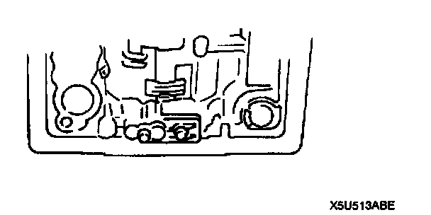
43. Remove the brake applying cover.
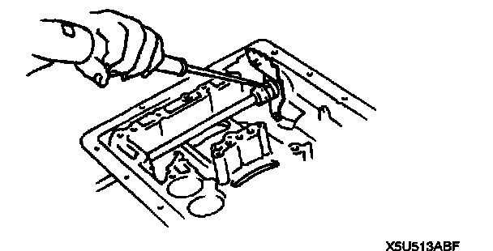
44. Undo caulking of sleeve cover by using the pin punch and move sleeve cover.
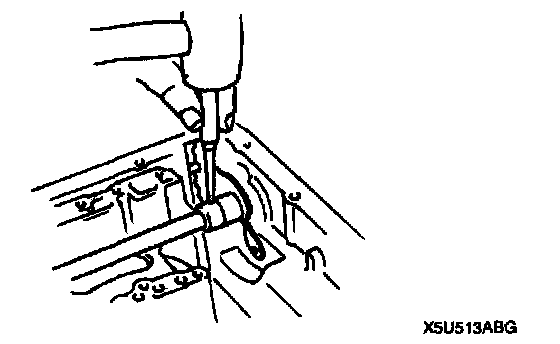
45. Using a pin punch, drive out roll pin, pull out manual shift shaft and remove manual shift lever. Then remove sleeve cover from manual shift lever.
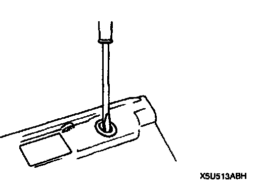
46. Remove oil seal from both sides of transmission case.
Oil Pump Disassembly / Assembly
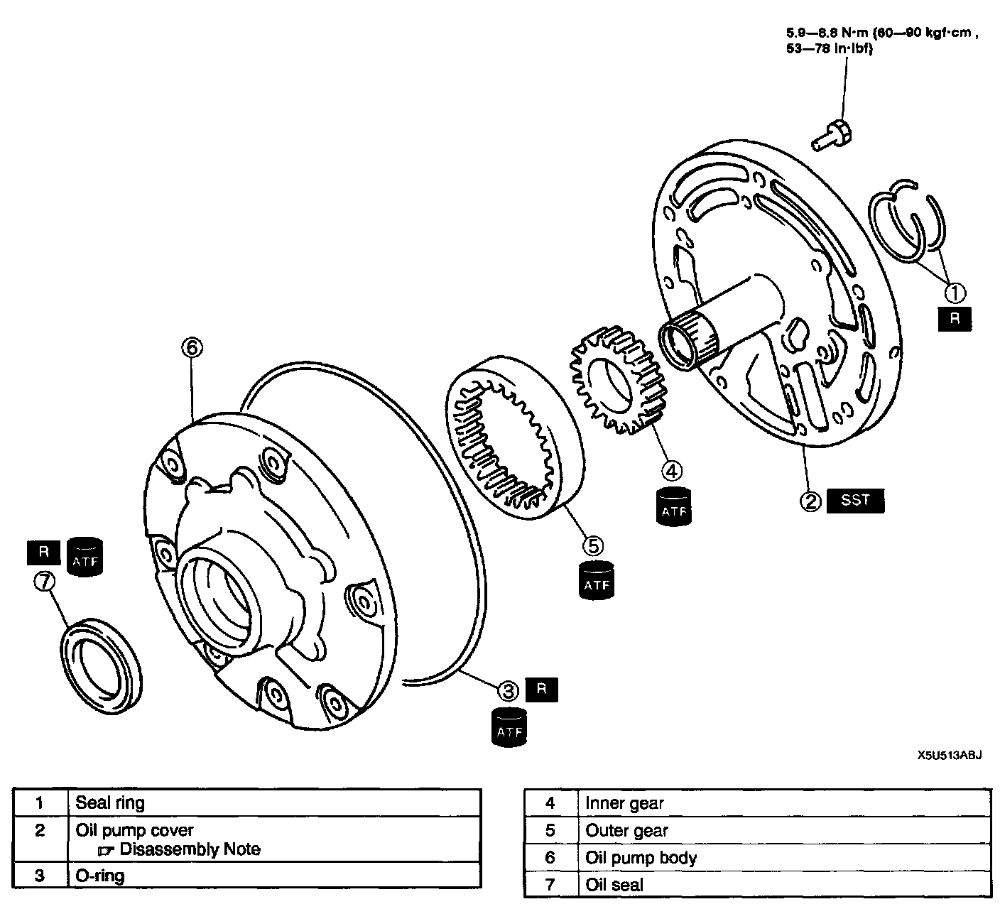
1. Remove in the order indicated in the table.
2. Install in the reverse order of removal.
Oil Pump Cover Disassembly Note
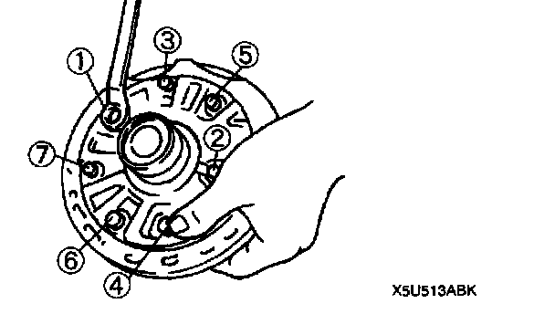
1. Loosen the mounting bolts evenly in the order shown.
2. Remove the oil pump cover from the oil pump body.
Assembly Procedure
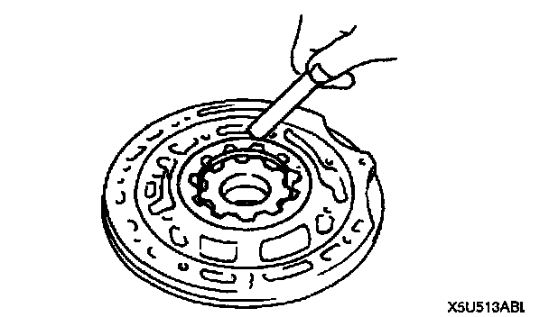
1. Measure the clearance between the end of the oil pump body and at the outer gear at four places along their circumferences.
Clearance
Standard: 0.07 - 0.15 mm (0.003 - 0.005 inch)
Maximum: 0.3 mm (0.01 inch)
2. If not within the specification, replace the oil pump component.
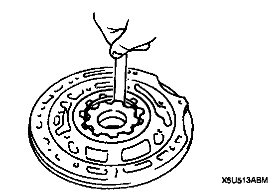
3. Measure the clearance between the outer gear and the crescent.
Clearance
Standard: 0.11 - 0.14 mm (0.0044 - 0.0055 inch)
Maximum: 0.3 mm (O.0118 inch)
4. If not within the specification, replace the oil pump component.
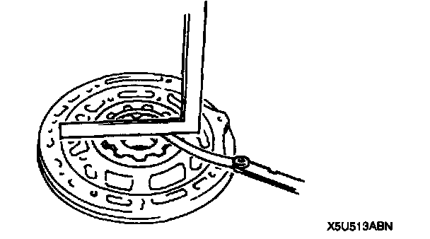
5. Measure the clearance between the end of the oil pump body and the inner gear and outer gear four places along their circumferences.
Clearance
Standard: 0.02 - 0.05 mm (O.00079 - 0.00196 inch)
Maximum: 0.1 mm (O.00394 inch)
6. If not within the specification, replace the oil pump component.
7. Apply ATF to the new oil seal.
8. Apply ATF to the inner gear, outer gear, and oil pump body.
9. Install the inner gear and outer gear to the oil pump body.
10. Install the oil pump body to the torque converter.
11. Install the oil pump cover to the oil pump body.
12. Loosen the bolts.
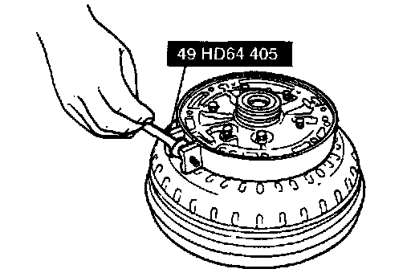
13. Install the SST to the oil pump component.
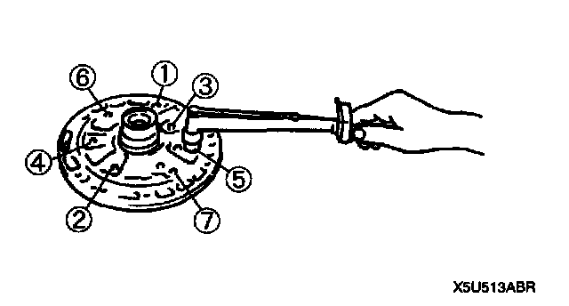
14. Tighten the bolts evenly and gradually in the order shown.
Tightening torque 5.9 - 8.8 Nm (60 - 90 kgf-cm, 53 - 78 inch lbs.)
15. Remove the SST.
16. Apply ATF to the O-ring.
17. Install the O-ring to the oil pump component.
18. When assembly is completed, make sure that the gears turn easily.
19. Remove the oil pump from the torque converter.
4GR Input Shaft And 4GR Clutch Disassembly / Assembly
1. Carry out the preinspection before disassembly.
4th Gear Clutch:

2. Disassemble in the order indicated in the table.
3. Assemble in the reverse order of disassembly.
Inner Snap Ring Disassembly Note
Caution: Depress the piston return spring only enough to remove the snap ring. Overpressing will damage the retainer component edges.
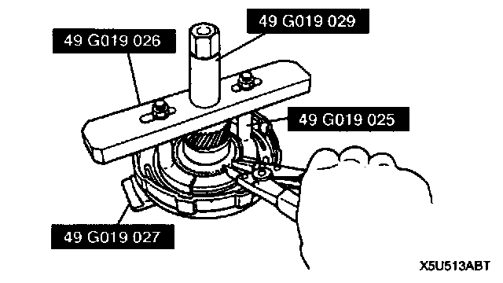
1. Install the SSTs in the 4GR clutch drum as shown.
2. Compress the piston return spring.
3. Remove one-end of the snap ring from the groove with snap ring pliers.
4. Remove the SSTs from the 4GR clutch drum.
5. Remove the snap ring.
4GR Clutch Piston Disassembly Note
1. Set the 4GR clutch drum onto the oil pump.
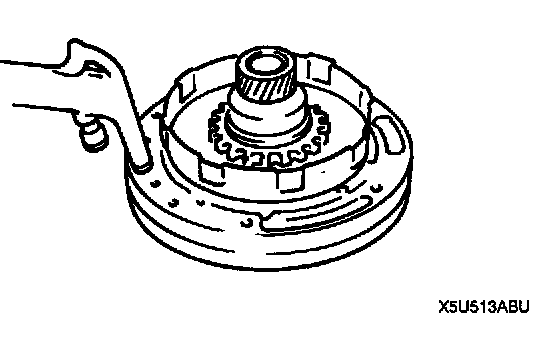
2. Remove the 4GR clutch piston by applying compressed air through the fluid passage.
Air pressure 390 kPa (4.0 kgf/cm2, 57 psi) max.
Assembly Procedure
1. Verify that there is no air leakage when applying compressed air through the oil hole opposite the return spring.
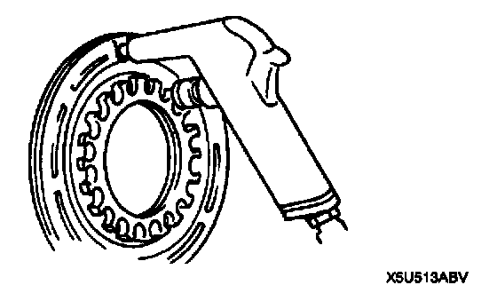
2. Verify that there is air flow when applying compressed air through the oil hole on the return spring side.
Air pressure 390 kPa (4.0 kgf/cm2, 57 psi) max.
3. Replace the 4GR input shaft and 4GR clutch component if damaged or malfunctioning.
4. Install the 4GR one-way clutch to the outer race.
5. Install the thrust washer and one-way clutch component to the planetary pinion carrier.
6. Install the snap ring.
7. Apply ATF to the new O-ring.
8. Install the O-ring to the piston.
9. Install the piston to the 4GR clutch drum.
10. Install the spring and retainer component and snap ring.
Caution: Depress the piston return spring only enough to install the snap ring. Overpressing will damage the retainer component edges.
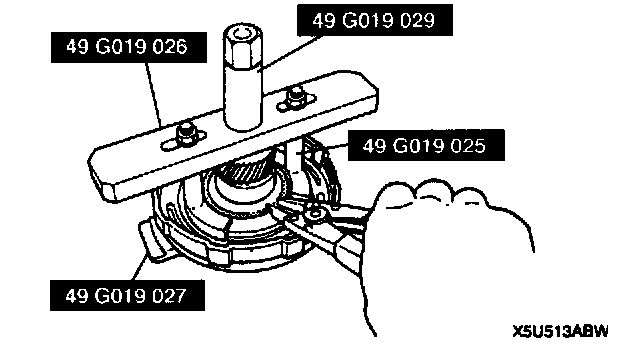
11. Install the SSTs on the 4GR clutch drum.
12. Compress the spring and retainer component.
13. Install the snap ring.
14. Remove the SSTs.
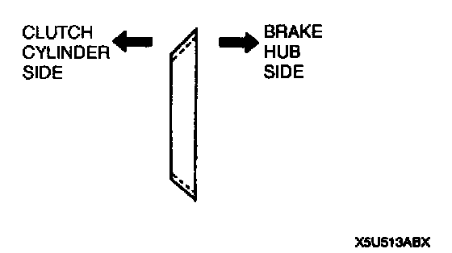
15. Install the dished plate with the dished side facing brake hub side.
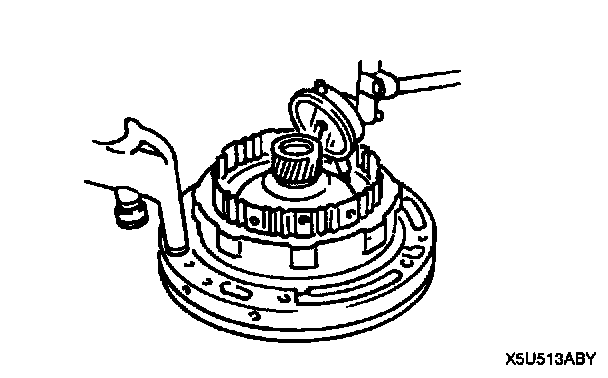
16. Inspect the 4GR clutch piston stroke.
1) Install the 4GR brake hub and outer snap ring.
2) Install the 4GR clutch drum onto the oil pump component.
3) Using a dial indicator, measure the 4GR clutch piston stroke applying and releasing the compressed air as shown.
Air pressure 390 kPa (4.0 kgf/cm2, 57 psi) max.
Piston stroke 1.77 - 2.58 mm (O.07 - 0.10 inch)
17. If not as specified, replace the drive plate.
18. Remove the outer snap ring and 4GR brake hub.
19. Install the snap ring to the 4GR clutch drum.
20. Install the 4GR brake hub and snap ring.
21. Apply petroleum jelly to the thrust bearing and bearing race.
22. Install the thrust bearing and bearing race.
23. Install the 4GR clutch component and 4GR planetary gear.
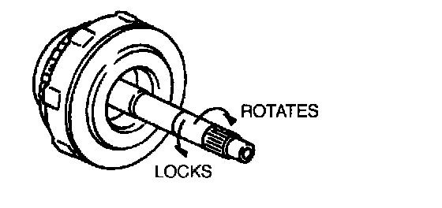
24. While holding the 4GR clutch drum, verify that the input shaft rotates smoothly when turned clockwise and locks when turned counterclockwise. If not as specified, replace 4GR input shaft and 4GR clutch component.
25. Install the thrust washer to the 4GR input shaft and 4GR clutch.
26. Apply petroleum jelly to the thrust bearing and race.
27. Install the thrust bearing and bearing race to the 4GR clutch side.
4GR Case And 4GR Brake Disassembly / Assembly
1. Carry out the preinspection before disassembly.

2. Disassemble in the order indicated in the table.
3. Assemble in the reverse order of disassembly.
4GR Brake Piston Disassembly Note
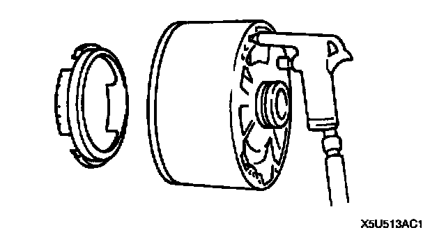
- Remove the 4GR brake piston by applying compressed air through the fluid passage.
Air pressure 390 kPa (4.0 kgf/cm2, 57 psi) max.
Assembly Procedure
1. Install seal ring to the 4GR case.
2. Apply ATF to the new O-ring.
3. Install the O-ring to the 4GR brake piston.
4. Install the 4GR brake piston to the 4GR case.
5. Install the spring, spring retainer, and snap ring.
6. Install the bearing race to the 4GR case.
7. Install the internal gear.
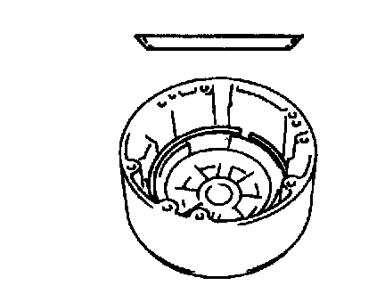
8. Install the dished plate with the dished side facing upward.
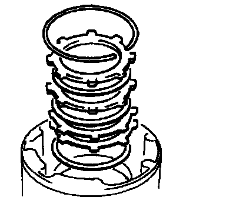
9. Install the drive and driven plates in the following order.
10. Install the retaining plate.
11. Install the snap ring.
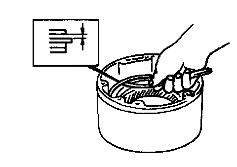
12. Measure the clearance between the snap ring and the retaining plate. Make several measurements and calculate the average value.
Clearance 0.56 - 1.62 mm (O.03 - 0.06 inch)
13. If not as specified, replace the drive plate.
14. Install the thrust washer to the internal gear.
Forward Clutch Disassembly / Assembly
1. Carry out the preinspection before disassembly.
Clutches:

2. Disassemble in the order indicated in the table.
3. Assemble in the reverse order of disassembly.
Inner Snap Ring Disassembly Note
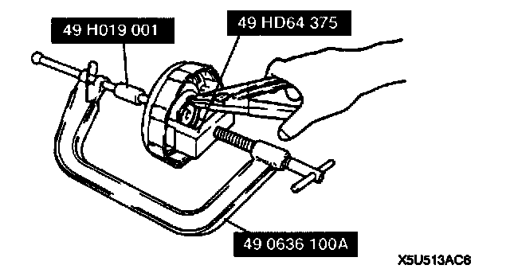
1. Install the SSTs to the forward clutch drum.
Caution: Depress the piston return spring only enough to remove the snap ring. Overpressing will damage the retainer assembly edges.
2. Compress the piston return spring.
3. Remove one end of the snap ring from the groove with snap ring pliers.
Forward Clutch Piston Disassembly Note
1. Install the forward clutch onto the 4GR case.
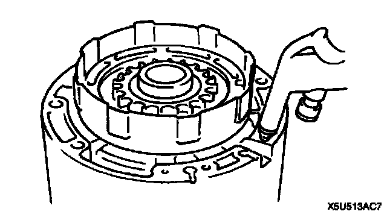
2. Remove the forward clutch piston from the forward clutch drum by applying compressed air through the fluid passage.
Air pressure 390 kPa (4.0 kgf/cm2, 57 psi) max.
Assembly Procedure
1. Verify that there is no air leakage when applying compressed air through the oil hole opposite the return spring.
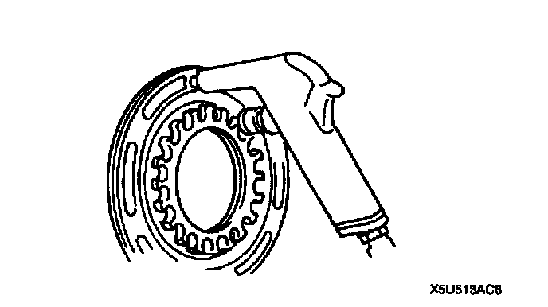
2. Verify that there is air flow when applying compressed air through the oil hole on the return spring side.
Air pressure 390 kPa (4.0 kgf/cm2, 57 psi) max.
3. Replace the forward clutch component if damaged or malfunctioning.
4. Apply ATF to the O-ring.
5. Install the O-ring to the piston.
6. Install the forward clutch piston to the drum.
7. Install the spring and retainer component and snap ring.
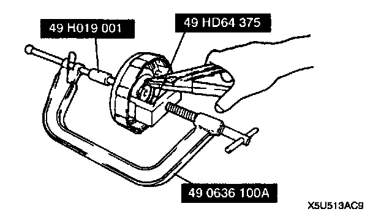
8. Install the SSTs to the forward clutch drum.
Caution: Depress the piston return spring only enough to Install the snap ring. Overpressing will damage the retainer component edges.
9. Compress the spring and retainer component.
10. Install the snap ring.
11. Remove the SSTs.
12. Install the drive and driven plates.
13. Install the direct clutch hub and outer snap ring.
14. Install the forward clutch drum onto the 4GR case.
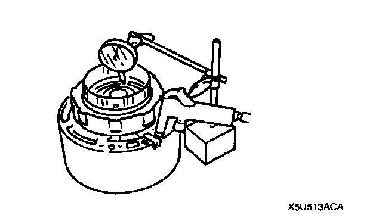
15. Using a dial indicator, measure the forward clutch piston stroke applying and releasing the compressed air as shown.
Air pressure 390 kPa (4.0 kgf/cm2, 57 psi) max.
Stroke 1.40 - 1.60 mm (O.056 - 0.062 inch)
16. If measured value is not within standard range, use either 1.8 mm (0.07 inch) or 2.0 mm (0.08 inch) drive plate to adjust it to standard value.
17. Remove the outer snap ring, direct clutch hub, and drive plate.
18. Install the snap ring.
19. Apply petroleum jelly to the thrust bearing and race.
20. Install the forward clutch hub.
21. Install the drive plate, direct clutch hub, and outer snap ring.
22. Install the thrust bearing and bearing race to the forward clutch.
Direct Clutch Disassembly / Assembly
1. Carry out the preinspection before disassembly.
Direct Clutch:
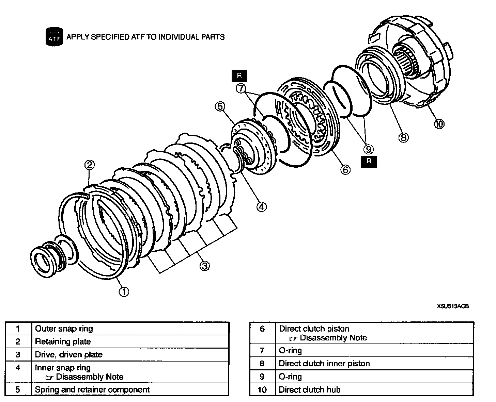
2. Disassemble in the order indicated in the table.
3. Assemble in the reverse order of disassembly.
Inner Snap Ring Disassembly Note
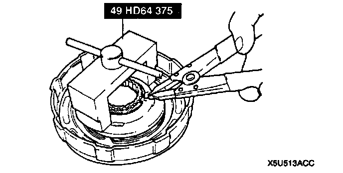
1. Install the SSTs to the direct clutch hub.
Caution: Depress the piston return spring only enough to remove the snap ring. Overpressing will damage the retainer component edges.
2. Compress the piston return spring.
3. Remove one end of the snap ring from the groove with snap ring pliers.
4. Remove the SSTs.
Direct Clutch Piston Disassembly Note
1. Install the direct clutch hub onto the center support.
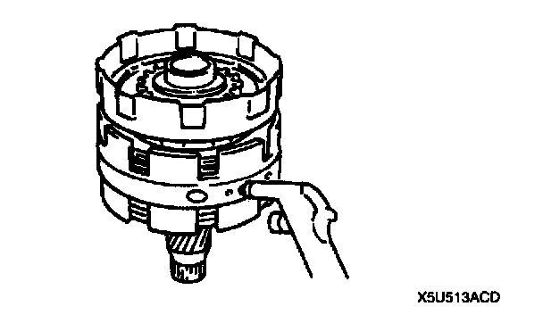
2. Remove the piston from direct clutch hub by applying compressed air through the fluid passage.
Assembly Procedure
1. Verify that there is no air leakage when applying compressed air through the oil hole opposite the return spring.
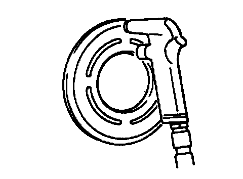
2. Verify that there is air flow when applying compressed air through the oil hole on the return spring side.
Air pressure 390 kPa (4.0 kgf/cm2, 57 psi) max.
3. Replace the direct clutch component if damaged or malfunctioning.
4. Apply ATF to the new O-ring.
5. Install the O-ring to the direct clutch piston.
6. Install the direct clutch piston to the direct clutch hub.
7. Install the return spring and retainer component and snap ring to the direct clutch hub.
8. Install the SSTs.
Caution: Depress the piston return spring only enough to Install the snap ring. Overpressing will damage the retainer component edges.
9. Compress the spring and retainer component.
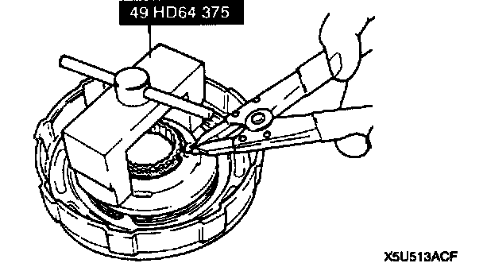
10. Install the snap ring.
11. Remove the SSTs.
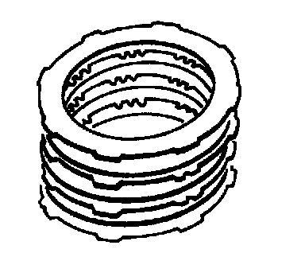
12. Install the drive and driven plates in the following order.
13. Install the retaining plate.
14. Install the snap ring.
15. Install the direct clutch component onto the center support.

16. Using a dial indicator, measure the direct clutch piston stroke applying and releasing the compressed air as shown.
Air pressure 390 kPa (4.0 kgf/cm2, 57 psi) max.
Piston stroke 1.60 - 1.64 mm (O.05 - 0.06 inch)
17. If it is not within standard range, use 3.55 mm (0.14 inch), 3.75 mm (O.15 inch), or 4.0 mm (O.16 inch) drive plate to adjust it to standard stroke.
18. Remove the direct clutch component.